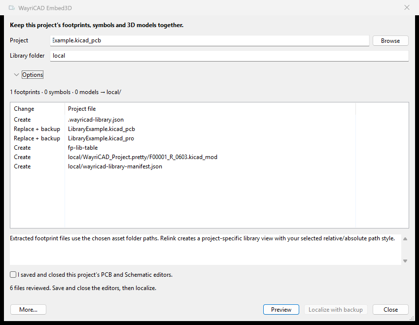

Scan, select and process saved design assets.
local/.Search only filters visible rows; it does not clear selections. Options & library tools retains other selective actions, path settings, diagnostics, and Localize entire project with backup. The full-project workflow updates saved project files after preview and requires the editors to be closed. Missing external model files require their source folder or explicit partial mode.

KiCad 10 native Python is required for footprint normalization and validation. KiCad 11 acceptance remains unverified.